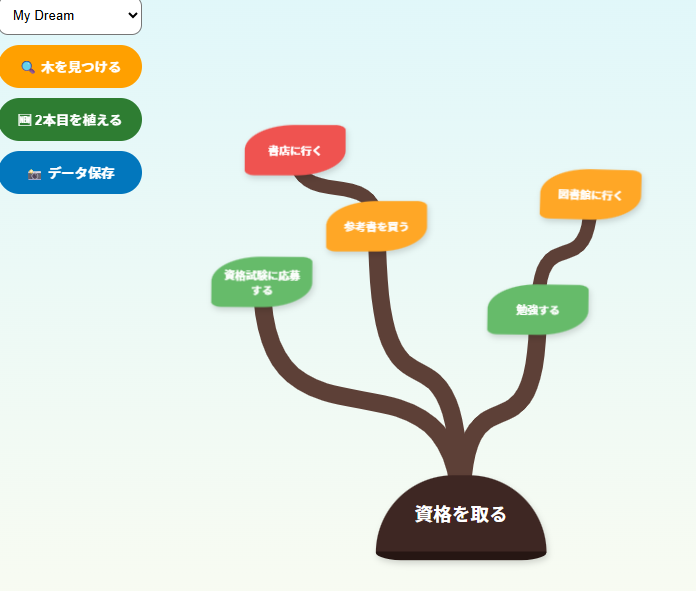
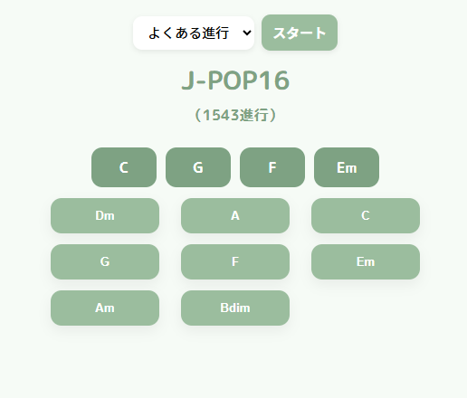
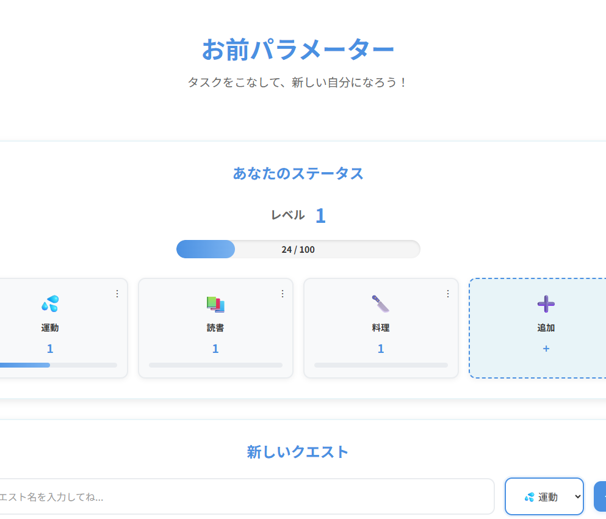

01 GENESIS
02 AI COLLABORATION
03 ARTIFACTS

目標を「木」として視覚化し、成長を実感させるタスク管理アプリ。 AIとの対話により、親子関係のデータ構造とアニメーションを爆速で実装。 残りの時間で、ユーザーが「育てる喜び」を感じるUIの微調整に心血を注ぎました。

J-POPの定番コード進行を遊びながら学べる音楽学習ツール。 複雑な音楽理論のロジックをAIと共創し、私は「直感的に触れる楽しさ」という デザインのUX設計に集中することで、短期間で高い完成度を実現しました。

ゲーム感覚でタスク管理を楽しめるRPG風タスク管理アプリ。 パラメーターシステムで成長を可視化し、日々のタスクをクエストとして体験。 ユーザーが自分だけのパラメーター設定を構築できる自由度の高い設計を実現しました。